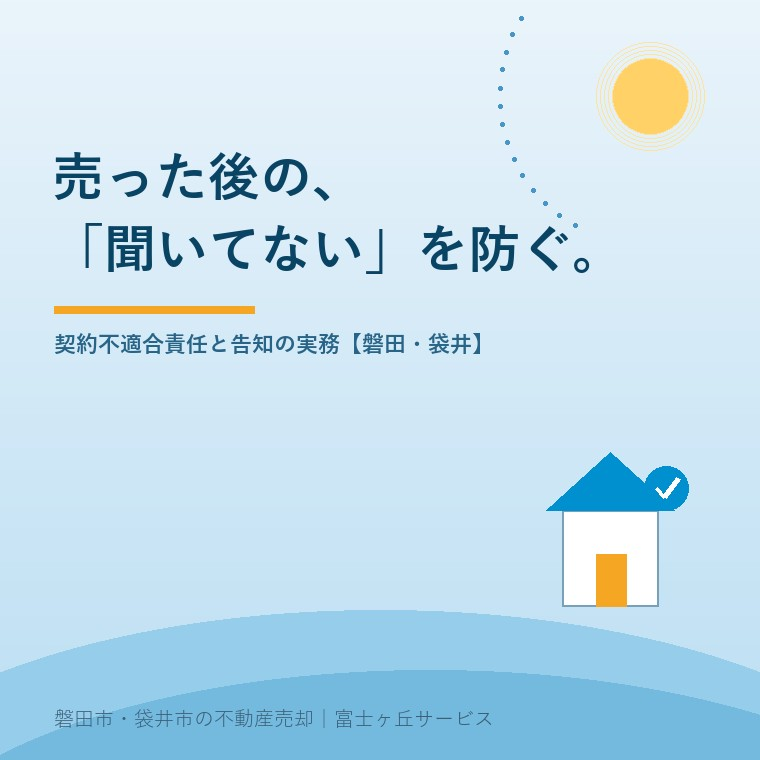

2026年8月4日｜カテゴリ：契約・引き渡し後の責任

この記事の要点
Q. 古い実家を売った後、買主から「雨漏りしていた」と言われたら、直す責任があるの？
A. 引き渡した物件が契約の内容に合っていない場合、売主は修補・代金減額・損害賠償などの責任（契約不適合責任）を負うことがあります。ただし個人間の売買では特約で責任を免除・限定するのが一般的で、何より「知っている不具合を契約前に正直に告知する」ことが最大の防御になります。磐田市・袋井市では、介護施設の運営から不動産事業を始めた富士ヶ丘サービスのような地域密着の会社が、告知書の作成から契約条項まで並走します。
売却シリーズは今日で「契約後」の話に入ります。買主が決まり、契約して、引き渡しも終わってホッとしたころ──「2階の天井にシミが出た。雨漏りしていたのでは」と連絡が来る。実は、古い実家の売主が一番知らないまま契約しているのが、この引き渡した後の責任の話です。正しく備えれば怖くありません。順に整理します。
2020年4月の民法改正で、それまでの「瑕疵担保責任」は「契約不適合責任」に変わりました。引き渡した物件の種類・品質が契約の内容に適合しないとき、買主は売主に対して、修補（追完請求）、代金減額、損害賠償、契約解除を求めることができます（民法562条以下）。買主は不適合を知った時から1年以内にその旨を通知する必要があります（566条）。
大事なのは発想の転換です。旧法の「隠れた瑕疵があるか」ではなく、「契約書と告知書に何と書いてあったか」との照らし合わせで責任が決まる。つまり、契約時にどこまで正直に書面化したかが、そのまま売主の安全につながる制度になったのです。
よくある誤解が「現況渡し（現況有姿）で売ったのだから、後のことは知らない」というもの。現況渡しは「修繕せず今の状態のまま引き渡す」という意味であって、それだけでは契約不適合責任の免除にはなりません。責任を免れるには、契約書に免責の特約を明確に入れる必要があります。
| 売主 | 免責特約のルール |
|---|---|
| 個人（実家の売却はこちら） | 「契約不適合責任を負わない」とする全部免責の特約も有効。築古物件では一般的な実務 |
| ただし例外 | 知りながら告げなかった不具合については、免責特約があっても責任を免れない（民法572条） |
| 宅建業者が売主の場合 | 買主に不利な特約は制限され、通知期間を引き渡しから2年以上とする必要（宅建業法40条） |
この表の2行目が、この記事でいちばん覚えて帰ってほしいところです。免責特約は「隠すための道具」にはなりません。知っていて黙っていた雨漏りは、どんな特約を結んでいても売主の責任です。
契約時に売主が作る「物件状況等報告書（告知書）」には、雨漏り・シロアリ・建物の傾き・給排水の故障・修繕履歴・increment境界の状況・周辺環境などを記載します。ここで「あったことを全部書く」のが、遠回りに見えて最強の防御です。理由は単純で、告知した不具合は「契約の内容」になるため、契約不適合ではなくなるから。「雨漏り跡あり・修繕済み」と書いて売った家の雨漏り跡は、後から責任を問われようがありません。
実家売却で難しいのは、子ども世代が家の履歴を知らないことです。「10年前に屋根を直した」「昔シロアリ消毒をした」「大雨で床下まで水が来たことがある」──こうした記憶は親御さんの中にしかありません。浸水履歴の記事でも書きましたが、親に聞けるうちに聞いて、メモに残す。これが数年後の売却時に、家族を守る告知書の材料になります。
「不具合があるかどうか、そもそも自分たちにも分からない」──そんなときの道具が、インスペクション（建物状況調査）です。国の登録を受けた建築士が、雨漏り・構造の傾き・ひび割れなど建物の状態を調査するもので、2018年からは媒介契約の際に不動産会社があっせんの可否を説明することが義務になっています。費用は一般的な戸建てで数万円程度。
築年数の古い実家、長く空き家だった家、遠方で状態を把握できていない家は、売り出し前のインスペクションを前向きに検討する価値があります。
この地域で売却のご相談を受ける実家は、築40年、50年という建物が珍しくありません。正直に言えば、その年数で「不具合ゼロ」はあり得ない前提で考えるべきです。だからこそ当社は、①契約不適合責任の免責特約（範囲を契約書で明確に）、②正直な告知書（親からの聞き取りを含めて一緒に作成）、③必要に応じてインスペクション──この三点セットで、売主さまが引き渡し後に枕を高くして眠れる契約を組み立てています。「売って終わり」ではなく「売った後も安心」までが売却です。
富士ヶ丘サービスは、磐田市・袋井市に特化した地域密着の会社として、「高く売る」だけでなく「売った後にもめない売却」を大切にしています。古い実家の売却がご不安な方は、ふじがおか実家カルテ・実家じまい相談室からご相談ください。
ふじがおか実家カルテ｜告知書の材料集めは、現状整理から
建物の状態・修繕歴・気になる点。売る前に、まず1冊に。
登記情報と現地確認から、売却時に告知・確認すべきポイントを宅建士が整理してお渡しします。インスペクションの手配もご相談いただけます。
本記事は2026年8月4日時点の情報をもとに作成しています。契約不適合責任の適用・免責特約の有効性は契約内容と個別の事情によります。契約書の条項は担当の宅地建物取引士に、紛争になった場合は弁護士にご相談ください。

この記事を書いた人：大石浩之（宅地建物取引士）
磐田市・袋井市で「介護×相続×空き家」に特化した不動産売却支援を行う富士ヶ丘サービスの代表取締役・宅地建物取引士。介護施設の運営から不動産事業を始めた経験をもとに、売主とご家族が困らない売却を一件ずつお手伝いしています。プロフィール
磐田市・袋井市の実家じまい・相続空き家相談
固定資産税通知書だけでも相談できます
住所があいまいでも、通知書や写真から名義・道路・農地・残置物の確認順を整理します。カルテ申込またはLINEで状況を送ってください。
富士ヶ丘サービス株式会社／静岡県磐田市見付5789番地1／TEL:0538-31-3308／静岡県知事 (2) 第14083号／代表取締役・宅地建物取引士 大石 浩之